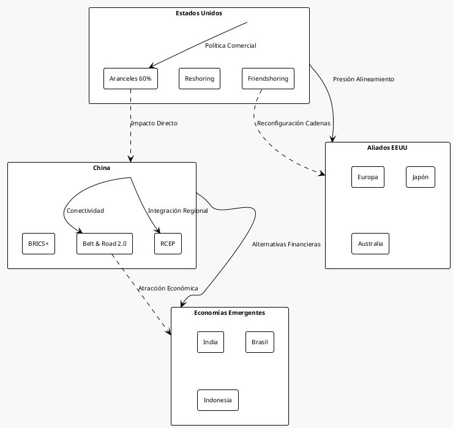
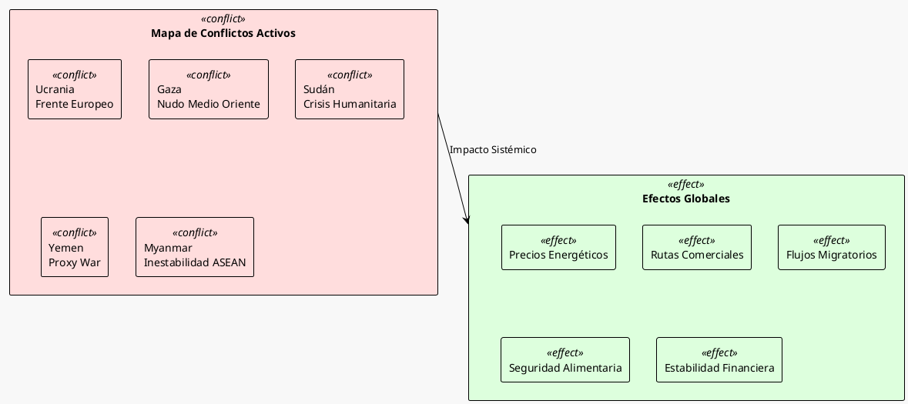
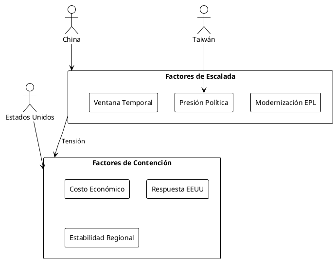

El Mundo en Mayo 2025: Cinco Crisis Geopolíticas que Redefinen el Orden Global Actual
El Mundo en Mayo 2025: Cinco Crisis Geopolíticas que Redefinen el Orden Global Actual
Introducción: Un Tablero Global en Transformación
El mes de mayo de 2025 ha cristalizado como un punto de inflexión en la arquitectura geopolítica mundial. Cinco vectores críticos convergen para reconfigurar el equilibrio de poder global, generando un escenario de volatilidad sin precedentes desde el fin de la Guerra Fría. Este análisis examina las dinámicas subyacentes que están moldeando un nuevo orden internacional, caracterizado por la fragmentación, la competencia entre grandes potencias y la erosión de las instituciones multilaterales.
Marco Analítico: Las Cinco Crisis Convergentes
1. La Gran Competencia: Estados Unidos vs. China
La rivalidad entre Washington y Beijing ha evolucionado más allá de una simple competencia comercial para convertirse en una confrontación sistémica que abarca todas las dimensiones del poder nacional.
Dimensión Económica
La implementación de aranceles del 60% a productos chinos y hasta 20% a otros socios comerciales por parte de la administración Trump marca un punto de no retorno en la desacoplamiento (decoupling) de las dos mayores economías mundiales. Esta medida no solo altera los flujos comerciales globales, sino que acelera la formación de bloques económicos rivales.

Dimensión Tecnológica
La guerra tecnológica se intensifica con restricciones en semiconductores, inteligencia artificial y tecnologías críticas. China responde con inversiones masivas en I+D+i y estrategias de autosuficiencia tecnológica.
Dimensión Militar
El refuerzo de la presencia militar estadounidense en el Indo-Pacífico contrasta con la modernización acelerada del Ejército Popular de Liberación, creando nuevos equilibrios de disuasión.
2. Conflictos Activos: La Multipolaridad Violenta
Guerra en Ucrania: El Frente Europeo
El conflicto ucraniano entra en su cuarto año con implicaciones que trascienden las fronteras europeas. La continuidad del apoyo occidental bajo la presidencia Trump genera incertidumbres estratégicas significativas.
Medio Oriente: El Nudo Gordiano
Los conflictos en Gaza, Siria, Yemen y las tensiones con Irán mantienen la región como epicentro de inestabilidad global, con efectos en los precios energéticos y las rutas comerciales.
Sudán: La Crisis Olvidada
El conflicto sudanés ejemplifica cómo las crisis regionales pueden tener efectos sistémicos en un mundo interconectado, afectando rutas migratorias y estabilidad regional.

3. El Estrecho de Taiwán: La Próxima Crisis
Las tensiones en el Estrecho de Taiwán representan potencialmente el mayor riesgo geopolítico del siglo XXI. La modernización militar china, incluyendo el establecimiento de nuevas academias para la Fuerza de Apoyo de Información y Logístico Conjunto, señala preparativos serios para un posible escenario de conflicto.
Factores de Escalada:
- Capacidades Militares: Modernización acelerada del EPL
- Retórica Política: Comparaciones taiwanesas con Ucrania
- Dinámicas Electorales: Presiones internas en ambos lados
- Factor Temporal: Ventana de oportunidad estratégica

4. El Retorno del Trumpismo: América Primero 2.0
La segunda presidencia de Trump introduce elementos de impredecibilidad en un sistema internacional ya desestabilizado. La agenda "América Primero" redefinida tiene implicaciones profundas para el liderazgo global estadounidense.
Características Clave:
- Reducción de Compromisos Globales: Menor presencia militar mundial
- Presión sobre Aliados: Exigencia de mayor burden-sharing
- Unilateralismo Comercial: Política arancelaria agresiva
- Pragmatismo Transaccional: Relaciones bilaterales ad-hoc
| Área | Política Obama/Biden | Política Trump 2.0 |
|---|---|---|
| Comercio | Multilateralismo TPP | Bilateralismo Arancelario |
| Defensa | Burden Sharing Gradual | Reducción Drástica |
| Clima | Liderazgo Global | America First Energy |
| Alianzas | Institucionalización | Transaccionalismo |
5. Fragmentación del Orden Internacional
El orden liberal internacional enfrenta su crisis más profunda desde 1945. La convergencia de fuerzas populistas, nacionalistas y autoritarias erosiona las bases del sistema multilateral.
Manifestaciones de la Crisis:
- Populismo Global: Limitación de inmigración y proteccionismo
- Crisis Institucional: Debilitamiento de organismos multilaterales
- Bloques Rivales: Formación de alianzas alternativas
- Deglobalización: Reshoring y nearshoring masivos
Análisis de Riesgos Sistémicos
Matriz de Riesgos Geopolíticos
| Riesgo | Probabilidad | Impacto | Horizonte Temporal | Mitigación |
|---|---|---|---|---|
| Conflicto Taiwán | Media | Muy Alto | 2-5 años | Disuasión Multilateral |
| Escalada Ucrania | Alta | Alto | 6-12 meses | Negociación Mediada |
| Guerra Comercial Total | Alta | Alto | Inmediato | Diálogo Bilateral |
| Crisis Energética Global | Media | Alto | 1-2 años | Diversificación |
| Colapso Institucional | Baja | Muy Alto | 5-10 años | Reforma Multilateral |
Escenarios Prospectivos
Escenario 1: Confrontación Bipolar (Probabilidad: 40%)
Consolidación de dos bloques antagónicos liderados por EEUU y China, con conflictos proxy permanentes y desacoplamiento económico total.
Escenario 2: Multipolaridad Caótica (Probabilidad: 35%)
Fragmentación en múltiples polos de poder sin hegemonía clara, caracterizada por inestabilidad permanente y conflictos recurrentes.
Escenario 3: Nuevo Equilibrio Cooperativo (Probabilidad: 25%)
Emergencia gradual de nuevos mecanismos de gobernanza global que acomoden tanto a potencias establecidas como emergentes.
Implicaciones para el Orden Global
Transformaciones Estructurales
La convergencia de estas cinco crisis está produciendo transformaciones estructurales irreversibles:
- Fin de la Unipolaridad: El momento unipolar estadounidense llega definitivamente a su fin
- Multipolaridad Conflictiva: Emergencia de un sistema multipolar caracterizado por la confrontación
- Regionalización: Fortalecimiento de bloques regionales como respuesta a la incertidumbre global
- Tecnopolítica: La tecnología como nuevo campo de batalla geopolítico
Dinámicas de Poder Emergentes
Poder Tradicional vs. Poder Asimétrico
Los actores estatales mantienen relevancia, pero actores no estatales (corporaciones tecnológicas, grupos terroristas, redes criminales) adquieren capacidades de influencia sistémica.
Geografía de la Influencia
Los espacios de influencia se redefinen más allá de criterios geográficos tradicionales, incluyendo ciberespacio, espacio exterior y océanos profundos.
Conclusiones: Navegando la Incertidumbre Estratégica
El análisis de mayo 2025 revela un sistema internacional en transición profunda, caracterizado por:
Tendencias Irreversibles:
- Competencia Sistémica: La rivalidad sino-estadounidense estructurará el sistema internacional por décadas
- Fragmentación Normativa: Erosión del consenso sobre normas y instituciones internacionales
- Conflictividad Permanente: Normalización de crisis múltiples y simultáneas
- Incertidumbre Estratégica: Impredecibilidad como característica sistémica
Desafíos para la Estabilidad Global:
- Ausencia de mecanismos efectivos de gestión de crisis
- Erosión de la confianza estratégica entre grandes potencias
- Debilitamiento de instituciones multilaterales
- Proliferación de tecnologías disruptivas sin marcos regulatorios
Recomendaciones Estratégicas:
Para navegar este entorno de alta volatilidad, los actores internacionales deberían:
- Desarrollar Capacidades de Adaptación: Flexibilidad estratégica para responder a cambios rápidos
- Diversificar Asociaciones: Reducir dependencias estratégicas excesivas
- Invertir en Resiliencia: Fortalecer capacidades de respuesta a crisis múltiples
- Promover Diálogo Estratégico: Mantener canales de comunicación incluso en contextos adversariales
El mundo de mayo 2025 nos muestra un sistema internacional en transformación acelerada, donde las certezas del pasado han dado paso a un escenario de competencia constante y adaptación permanente. La capacidad de los actores internacionales para navegar esta complejidad determinará la estabilidad y prosperidad global en las décadas venideras.
—
Referencias y Fuentes
Fuentes Primarias:
- Análisis de inteligencia estratégica contemporánea
- Informes de think tanks especializados
- Declaraciones oficiales de gobiernos y organismos internacionales
Metodología:
Este análisis se basa en el seguimiento sistemático de fuentes abiertas especializadas en geopolítica y relaciones internacionales, aplicando marcos analíticos de la escuela realista de relaciones internacionales y teorías de transición hegemónica.